SAGANO BLOG
- >
- SAGANO BLOG
- >
- 部活動
2023年11月24日
11月19日に三重県津市で行われた、第44回近畿高等学校総合文化祭放送部門において、放送部の作成したビデオメッセージ作品が優秀賞（2～5位相当）を受賞しました。
タイトルは「六条御息所～先輩から後輩へ引き継がれる和菓子～」で、本校の京・平安文化論ラボが取り組み続けている、源氏物語の登場人物をモチーフにした和菓子制作を取り上げた作品です。
この取り組みを近畿の高校生達に紹介することができた上に、賞を頂けたことは大きな喜びです。
京・平安文化論ラボでは、今年は洋菓子で登場人物をデザインしています。そちらのブログの記事も是非ご覧ください！
2023年11月22日

シンギュラリティバトルクエスト2023 二次予選の結果が11月14日に発表され、嵯峨野高校コンピュータ部から参加したチーム「HEXAGON」はサイバークエスト関西ブロック代表に選ばれました。
シンギュラリティバトルクエストとはAI/ICTのスキルを競う大会で、AIクエスト、サイバークエスト、データクエスト、ロボクエスト、Xクエストの５つの競技があります。HEXAGONが参加したサイバークエストは、情報セキュリティに関するクイズ形式の問題を、セキュリティの知識やソフトを駆使して、隠された言葉(Flag)を見つけるCTF形式の競技です。
2024年１月20･21日に開催される決勝大会では、各ブロック代表６チーム、選抜枠11チーム、リベンジャーズ３チームの合計20チームが競い合います。決勝でも入賞できるよう頑張ります！
2023年11月21日
11月19日（日）、滋賀県の豊郷町で「第11回とよさと軽音楽甲子園」が実施されました。
アニメ「けいおん」の聖地である豊郷小学校旧校舎に、全国から選抜された10バンドが集まり、オリジナル曲を披露しました。
嵯峨野高校からは２年生のバンド「ハロー二世帯住宅」が出場。
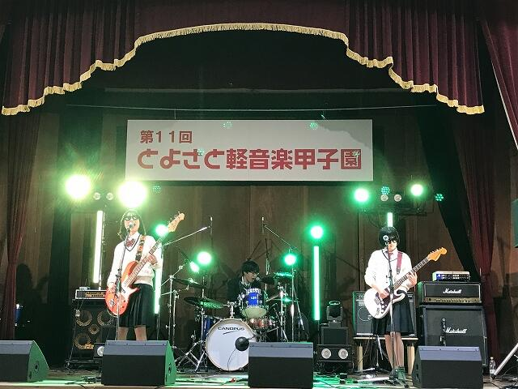
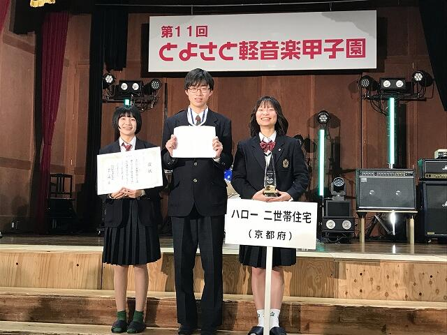
NHK大津放送局長賞（３位相当）を受賞しました！
2023年11月15日
特殊詐欺被害防止のためにパトカーから流す啓発音声を放送部が担当させていただいたことに対して、右京警察署より感謝状を頂戴しました。
ナレーション担当１名、特殊詐欺の実例の音声担当６名で録音を行い、詐欺電話の例が２つ流れる啓発音声を３パターン作成しました。
すでにパトカーから音声を流していただいていますので、お聞き頂いた際には「嵯峨野の放送部の生徒の声だ」と思っていただくとともに、特殊詐欺にはくれぐれも御注意ください。
2023年11月15日


嵯峨野高校狂言部では、来る12月16日(土)に、今年の「嵯峨野高校狂言の会」を開催します。
日時：令和5年12月16日(土) 午後2時開演
会場：冬青庵能舞台(京都市中京区両替町通夷川下ル、地下鉄「丸太町」「烏丸御池」駅から徒歩5分)
冬青庵能舞台のホームページ
曲目：『蟹山伏(かにやまぶし)』、『附子(ぶす)』(以上嵯峨野高校生)、『伯母ヶ酒(おばがさけ)』(茂山千五郎先生、網谷正美先生)
入場無料
御参加の申込は、次の要領でお願いいたします。
嵯峨野高校生･御家族は、配布した参加申込書をホームルーム担任へお渡しください。
学校外の方は、メールアドレス [email protected] へ、次の要領でお申し込みください。
・メールの題名は「狂言の会申込み」としてください。
・メールの本文には、次の内容を記載してください。個人情報は十分注意して管理いたします。
(1) 参加を希望される人数
(2) 各自のお名前
(3) 返信先のメールアドレス
定員(60名)まで先着順により、整理券をお渡しします。メールで申し込まれた方には、メールで整理番号を返信します。当日は、全席自由です。
なお、当日、発熱や風邪症状がある場合は、恐れ入りますが入場を御遠慮ください。
現在、茂山千五郎先生の指導のもと、部員3人が張り切って稽古中です。ぜひ御来場ください。
(記事上の画像は、昨年の「嵯峨野高校狂言の会」のものです。)
2023年11月08日
11月３日、本校ESS部の部員12名が、京都市立日吉ヶ丘高校にて開催されたパーラメンタリーディベート（即興型英語ディベート）京都公立高校生交流大会に参加しました。
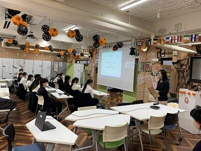
開会の挨拶の後、京都府内から参加した６校12チームによる試合が行われ、本校からは４チームが参加しました。この日は、ネットショッピングと実際にお店に行く買い物とどちらが良いかなどが論題となりました。
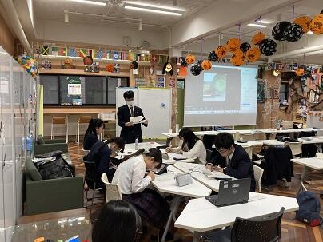 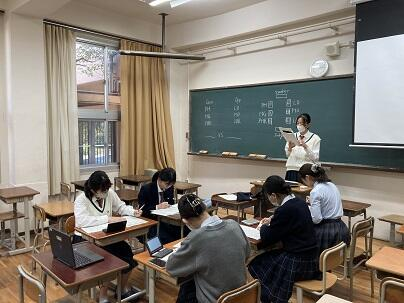
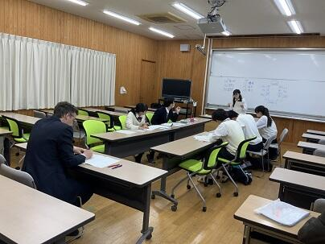 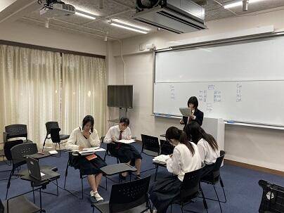
結果、本校から参加したチームが優勝、第３位となり、表彰されました。
また、各回で優秀な成績を収めた参加者に贈られる賞として、ベストディベータ賞を５名、POI（Point of Information）賞を４名の生徒が受賞しました。
 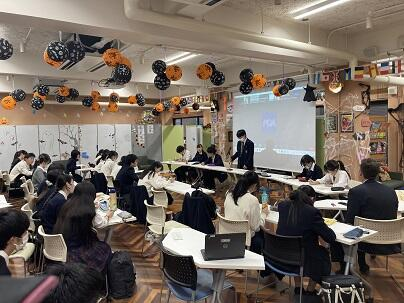
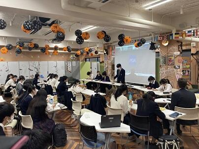
全体を通して、嵯峨野高校ESS部の英語ディベートのレベルアップが実感できる大会でした。今後も様々な機会で英語ディベートに積極的に取り組んで行きます。
 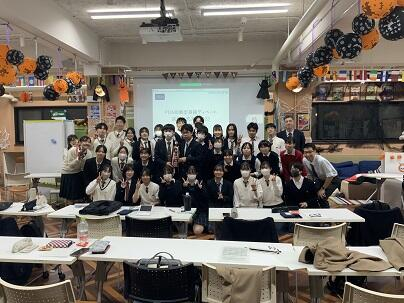
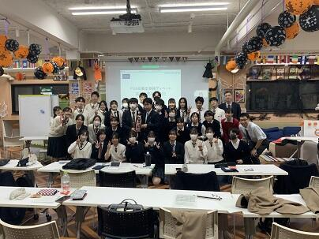
2023年11月07日
11月４日・５日に実施された「西陣TABI」にダンス同好会・軽音楽部の生徒が参加しました。
西陣の商店街を訪れた方にダンスや音楽を披露しました。
 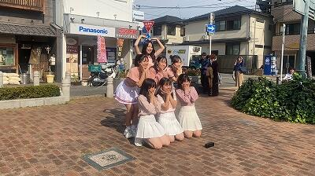
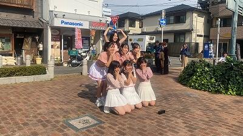
ダンス同好会の生徒たち
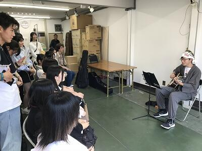
軽音楽部員の弾き語り
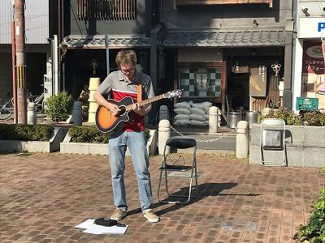
本校ALTも出演！
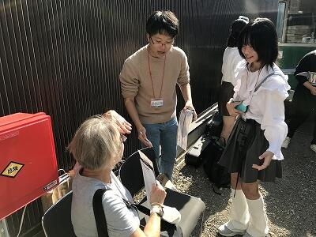
軽音楽部員はボランティアスタッフとしても活動しました。
2023年11月06日
11月5日行われた、京都府高等学校総合文化祭放送部門の結果は、
◎ビデオメッセージ部門(2年生制作)→1位 R06全国総文岐阜大会出場
◎オーディオメッセージ部門(1年生制作)→1位 R06全国総文岐阜大会出場
◎朗読部門新人戦→1年生女子1位 R06近畿総文福井大会出場
◎アナウンス部門→2年生女子4位 全国高校駅伝閉会式司会担当
となりました。
全国総文は25年間で24回目の出場(京都の放送部で最多)、近畿総文に読みで出場するのは4年振り、全国高校駅伝の司会は2年連続8回目となります。
番組制作やアナウンス原稿の取材では多くの皆様にお世話になりました。どうもありがとうございます！
全国、近畿でも入賞できるよう頑張ります！

2023年10月17日
10月15日（日）、太秦小学校にて開催された「第28回太秦福祉ふれあい祭り」の芸能コーナーに、バトントワリング部16名が参加しました。
ステージでは、文化祭で披露した曲目の中から「Shake it off」をはじめとした計３曲のパフォーマンスを行いました。
部員にとっては１・２年生ともに初めての地域イベントへの参加。会場に到着した時には緊張している様子も見られましたが、スタッフの方々の中には本校の卒業生という方もいらっしゃり、「応援してるよ」と温かいお声掛けをいただきました。そのおかげか、本番のステージでは笑顔でパフォーマンスを行うことができました。
また、上演後には部員も地域の皆様と一緒にお祭りを楽しませていただきました。太秦社会福祉協議会の皆様をはじめ、スタッフの皆様、見に来てくださった皆様、本当にありがとうございました！
今後も、地域の皆様に見ていただけるのを励みに、部員一同頑張っていきます。
2023年09月18日
9月16日（土）～18日（月）、熊本県玉名郡にて、ジャパンフィールドリサーチ（JFR）in 熊本を実施しました。
この取組は、各種学術学会での発表を目標にした、参加生徒の発案による森林環境調査です。
本校教諭の親族にご協力いただき、玉名郡和水町にある「ゆるっと！ひふみ亭」を拠点として、サイエンス部と校有林調査ラボの２年生12名が研究活動に参加しました。
また、熊本県立第二高校と熊本県立鹿本高校の生徒・教職員の皆さんと合同実施となりました。
初日は開会式の後にまず、前和水町教育長 岡本貞三 先生から、和水町の自然と歴史についての御講義をいただきました。

そして、熊本県の高校生と共に、ひふみ亭近隣の山林にて調査・研究活動を実施しました。
森林調査の際には、九州大学大学院農学研究院教授 平舘俊太郎 先生と、東海大学農学部教授 井上弦 先生からも指導・助言をいただきながらの活動となりました。
地面に穴を掘って土壌の観察をしたり、土の硬さ等を調べたりしました。
また竹林では、竹の太さや高さ、本数などを調べました。
調査地の測量をして、地形の調査も行いました。


当初は悪天候も想定されており、どのような活動ができるか不安もありましたが、幸いにも、ときどき小雨が降った程度で３日間の活動を無事に終えることができました！
本校の生徒たちも、現地で採取した竹や土のサンプルを持ち帰って、さらに探究活動を進め、１１月に実施予定のみやびサイエンスガーデンにおいて「熊本県和水町の放置竹林における土壌断面と土壌物理性」「熊本県における放置竹林問題～竹材利用に向けた全バイオマス量の測定～」「陶土の種類によるオカリナの音色比較」という研究主題で中間発表を行う予定にしています。

最後になりましたが、この活動の拠点としてお世話になったひふみ亭の方々には、参加生徒の調査研究活動に際して安心・安全の確保の観点からも全面的にご協力いただき、本当にお世話になりました。
特に、用意していただいたお昼ご飯は絶品でした！
お世話になった皆様、本当にありがとうございました。


2023年08月25日
嵯峨野高校ワンダーフォーゲル部です。2023年夏の部活動の報告をします。
春に行われたインターハイ府予選を男女とも１位で勝ち抜き、この夏は男女４人ずつ、計８名が北海道で行われたインターハイに出場しました（詳しくは、別ブログに記載予定）。そして、同時期にそれ以外のメンバーで北アルプスの3000m峰を目指す夏合宿を実施しました。 今年度は部員数が増え、インターハイ男女アベック出場も重なったため、テントやコンロなど備品等が足りないため、結果的に部員を２班に分け、時期をずらして２回（8/1発と8/7発）、同じ頂上を目指す夏合宿実施となりました。夏合宿では10数kgの荷物をテント場まで担ぎあげる体力が必要です。このため、事前に愛宕山で歩荷訓練を実施しました。また、3000m峰では足場の悪い登山道がほとんどです。ガレ場・ザレ場対応のため直前に比良山系の登山も実施し、合宿に臨みました。
今回の合宿で目指したのは、２年生が昨夏雷雨で登れなかった穂高連峰の一つ、「北穂高岳」3106m（日本第９位）です（下の地理院地図参照、双耳峰で一般の山頂（北峰）は地理院地図上では3103.6mと出ます）。２年生にとってはリベンジ、１年生は初めてのテント泊の北アルプスです。
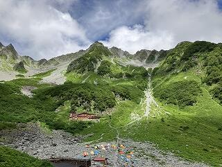 涸沢より北穂高岳を望む
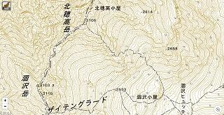 地理院地図より
合宿第１日目は、7時30分に学校集合し、貸切バスで上高地に入りました。13時30分頃には上高地に到着し、登山届を提出してこの日の幕営地、徳沢を目指しました。クマの出没地を通り抜け、サルが登山道を駆け回る中、徳沢に到着。さっそくテントを張り、夕食の準備にかかりました。日が沈む19時には就寝です。
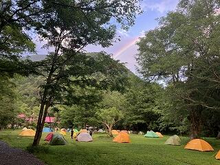 虹が出た徳沢キャンプ場
合宿第２日目は、徳沢から標高2300mの涸沢までテントを担ぎ上げます。そんなに時間はかかりませんが、体力が要る登りです。朝３時起床。皆ヘッドランプで朝食、テント撤収を済ませ、朝５時に徳沢を出発し、５〜７人のチームに分かれ、２年生の指示で涸沢を目指しました。途中、北アルプスのシンボル「屏風岩」が聳え立っているのがよく見えました。午前中８〜10時の間に全員涸沢に到着。到着後は涸沢カールの底から穂高連峰の山々を眺めるという贅沢な時間を過ごしました。日本アルプスでは、午後から天気が崩れることが多く、日が昇ると同時に登山活動を開始し、午前中に活動を終えるのが鉄則です。
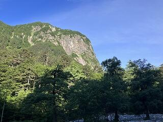 北アルプスのシンボル、屏風岩
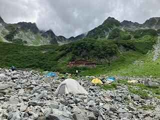 涸沢カール
合宿第３日目は、いよいよ北穂高岳山頂を目指します。朝３ 時に起床し、日が昇り始めた５時に出発しました。朝の５時頃というのは、ほんの５分程度、山の色が赤く輝く「モルゲンロート」という現象が見られる時間帯です。薔薇色に染まった穂高連峰を見ながら、涸沢を後にしました。急な登りが続き、標高をどんどん稼いでいきます。私たちのテントが下の方に点のように見えます。コースの途中で鎖場とハシゴ場が出てきます。「3点支持」を確認し協力しながら、難所を突破し、北穂高南稜に付けられた登山ルートを辿っていきます。登山ルートはペンキで指示されていますが、ルートファインディングには、技術と慣れが必要です。日本アルプスでルートを見誤ると大変なことになります。南稜から最後のトラバースを終え、９時前にようやく山頂に到着しました。合宿前半チームは前方の槍ヶ岳の絶景を望むことができましたが、合宿後半チームは、山頂は霧の中でした。いずれにしても、3000mの世界の山頂を自らの足で登り切った喜びを皆で分かち合えたのは貴重な経験です。少し休憩し写真を撮ったりした後、山頂での時間を惜しみながら、下山することとしました。下りは登り以上に慎重にしなければなりません。それでも皆、自信に満ちた表情と確実な足取りで涸沢まで無事下山しました。
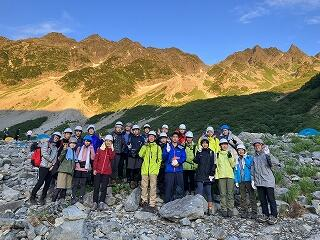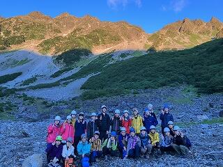
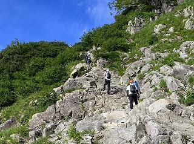
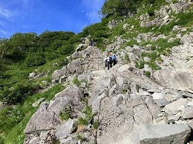
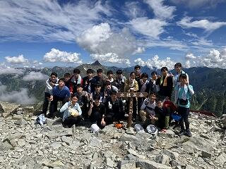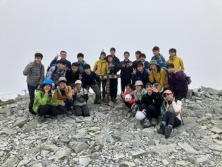
北穂高岳山頂（左前半チーム、右後半チーム）
合宿４日目も朝３時起床です。１年生もだいぶ慣れてきて、テントの撤収、朝食も順調にこなし、涸沢との別れを惜しみながら５時に出発し、ゴールの上高地を目指しました。11時前には皆、上高地に到着しました。すぐに貸切バスに乗車し、平湯温泉に向かいました。山に登った後の温泉は格別です。４日間の疲れをとり、19時頃、京都駅・嵯峨野高校でそれぞれ解散しました。合宿に参加した生徒たちは、「これで終わり」という少しの寂しさを感じながらも、心地よい疲労感の中、自信に満ちた精悍な顔つきで別れていきました。
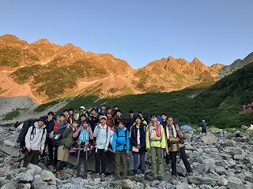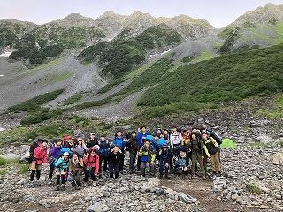
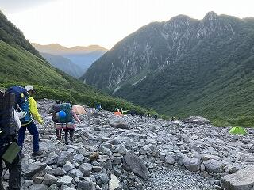 涸沢を後にする
嵯峨野高校ワンダーフォーゲル部夏合宿の4日間はまさに非日常の世界です。朝３時起床、夕方19時就寝なんて普段の生活では考えられません。スマホの通じない世界、高度2000数百mの世界で大きな石ころの上で、しかも満天の星空の下で何度も流れ星が流れる中、仲間と共に寝る、晴れた日の朝５時頃しかみられない山々が薔薇色に染まるモルゲンロート、苦しい登りの中で見る絶景。こういう本物に触れ、本物の感動を体験ができたのも、ご家庭の理解があってこそです。この場を借りて保護者等の皆様に感謝申し上げるとともに、慣れないテント泊と集団での行動でご迷惑をおかけしたにも関わらず、私たちの活動を暖かく見守ってくださった周囲の登山者の皆様にも感謝申し上げます。ありがとうございました。
2023年07月31日
７月22日、ESS部は、京都市立日吉ヶ丘高校にて開催されたパーラメンタリーディベート（即興型英語ディベート）交流会に参加しました。本校３年生にとっては、最後のディベート公式戦となりました。
本校からは３チームが参加し、それぞれ２試合を戦いました。参加した生徒からは、「新しい視点や反論の方法を学べて感動した」「他校の生徒と試合ができ、自分の改善点を知るいい機会になった」「色々な先生からコメントを頂けて、とても勉強になった」との意見が聞かれました。また、見学として参加した生徒からも「とても楽しかった」「次は選手として参加したい」という声がありました。最後は各校代表で編成したチームによるエキシビジョンマッチが行われ、本校からも３年生２名が参加しました。
初めて校外での公式戦に参加した１年生も、昨年から精力的にディベートの練習に取り組んできた２、３年生も、各々が日頃の練習の成果を大いに発揮できました。３年生はこの日の試合で引退となりますが、昨年から人数が増えた嵯峨野高校ESS部、さらなるレベルアップを目指して英語ディベートに取り組んでいきます。
2023年07月24日
７月15日（土）～17日（月）、京都府立丹後海と星の見える丘公園にて、ジャパンフィールドリサーチ（JFR）in 丹後を実施しました。この取組は、各種学術学会での発表を目標に、参加生徒の発案による森林環境調査であり、サイエンス部と校有林調査ラボの生徒12名が参加しました。生徒たちは、この取組のために約１ヶ月間にわたり、校有林や校内で事前学習を行ってきました。
開会式を行った後、本校卒業生のTA２名の案内により、周辺を探索しました。天橋立や伊根の町並みが見える景色に、生徒たちも期待が高まります。
１日目午後から３日目午前にかけて、「土壌調査・透水性調査」「森林調査」「昆虫採集」の３つのテーマに分かれ、調査を実施しました。
土壌調査をしたり
傾斜30°以上の斜面で森林規模の調査をしたり
公園の様々なエリアに生息する生き物を観察・採集したりしました。
次回は９月15日～18日に、熊本県玉名郡にて、熊本県立第二高等学校、鹿本高等学校とともに調査（JFR in 熊本）を行います。今回の経験を活かして、さらに研究を深めていくことを期待しています！
2023年06月21日
６月18日（日）に実施された「高校生軽音楽部コンテスト AREA OF YOUTH」において、軽音楽部２年生のバンド「ハロー二世帯住宅」が準グランプリを受賞しました。
「ハロー二世帯住宅」は、自分たちで作ったオリジナル曲「80才でライブしたい」「ハロー二世帯住宅のテーマ」の２曲を披露し、審査員の先生方から高い評価をいただきました。
３人はまだ２年生。これからもっと練習してうまくなりたいと話していました。
2023年06月06日
5月14日に行われた、第59回全国高校将棋京都府選手権大会男子団体で優勝し、８月に鹿児島県指宿市で開かれる、第47回全国高等学校総合文化祭（第59回全国高等学校将棋選手権大会）に出場することが決定しました。
１年生３人で臨んだ本校チームは、予選リーグを３戦全勝で１位通過しました。決勝トーナメントでも２・３年生相手に健闘し、2015年以来５回目の優勝を果たしました。
2002年には先輩が全国優勝を成し遂げているこの大会ですが、「先輩たちのように、優勝を目指して頑張りたい。」と意気込みを語ってくれていました。
2023年06月05日
６月３日･４日に行われた第70回NHK杯全国高校放送コンテスト京都大会に於いて､放送部の１年生が朗読部門で２位を獲得し､７月24日から東京で行われるNHK杯全国高校放送コンテストの出場を決めました。
本校としては初､京都府としても７年振りとなる準決勝進出を目指し､全国大会へ向けて練習に励んで参ります。
2023年05月26日
５月２０日（土）・２１日（日）の２日間にわたって、鞍馬・百井・花背周辺で行われた全国高等学校登山大会京都府予選で、本校ワンダーフォーゲル部が男子の部・女子の部でそれぞれ優勝し、今夏に北海道の十勝岳・黒岳・旭岳で行われる令和５年全国高等学校総合体育大会（インターハイ）登山大会に男女アベック出場することが決定しました。
競技登山の大会は、体力だけでなく、読図・装備・知識・天気図・炊事・幕営なども審査されます。今回は、コロナ禍でしばらくできなかったフルバージョンの審査が４年ぶりに行われました。一日目は、鞍馬を出発し、天ヶ岳山頂経由で百井の集落を抜け、安曇川支流の「陸地谷」を遡行し、大見尾根から花背別所をゴールとするコースで、旧別所小中学校グラウンドが幕営会場になりました。二日目のコースは花背別所から百井キャンプ場経由で翠黛山を登り、江文峠がゴールでした。二日目は朝４時に起床し朝６時の出発でした。一日目の「陸地谷」は４年ぶりに復活した伝統のルートです。道があるかないかのルートを何度も徒渉を繰り返し、泥まみれになりながら何とか登り切りました。
大会に出場した選手たちは、「山登りは総合力が問われます。皆で役割分担して協力できたのがよかったです。」「昨年先輩たちと悔しい思いをしたので、今年こそと思って大会に臨みました。信頼できる仲間たちと最後まで歩ききれてよかったです。」「久しぶりにフルバージョンの審査と聞きました。大会に向けて準備いただいた先生方、地元の方々に感謝したいです。」と語ってくれました。
2023年05月26日
いつも応援いただき、ありがとうございます。先日行われました第76回京都府高等学校総合体育大会（剣道）の男子上級の部において準優勝しました。メンバーは以下の部員です。
堀内 悠登さん（３年），森 路長さん（３年），荒金 俊明さん（３年）
田村 優樹さん（２年），西沢 知剛さん（２年）
１回戦の洛星戦，２回戦の莵道戦，３回戦の洛北戦と順当に勝ち上がり、準々決勝は、１月の全国選抜予選で京都府第３位の強豪日吉ヶ丘との対戦になりました。先鋒・田村選手や中堅・森選手の活躍もあり見事勝利し、準決勝に駒を進めました。
準決勝は、京都府第２位の強豪北嵯峨との対戦になりました。ここでも先鋒・田村選手や大将・荒金選手の活躍もあり、接戦をものにしました。
決勝は京都成章との対戦でしたが、先鋒・田村選手の活躍で序盤からリードするなど互角に戦いましたが惜しくも僅差で敗れ準優勝でした。
しかし、京都府の並み居る強豪を次々に下したことで着実にレベルアップしていることを実感したと思います。今回のことを自信にしつつ、次に向けて課題を１つずつ克服していき、インターハイ予選でも活躍してくれることと思います。引き続き応援よろしくお願いします。
2023年05月18日
５月13日（土）、常磐野小学校の４～６年生51名を迎えて、実験教室を実施しました。
４年生は「チリメンモンスターを探せ」、５・６年生は「クロマトグラフィー・浮沈子」の実験に取り組みました。実験方法や原理の説明、実習の補助については、サイエンス部の生徒を含む、本校ボランティア生徒13名が分担して行いました。

また、当日は「化石の話」として、嵯峨野高校にある化石標本を触ってもらいました。
この化石は栃木県那須塩原市で出土する、今から数十万年前の生物の化石です。これら化石の生物は、現在でも生息し、図鑑などでどの種類が化石になっているのか調べることができます。

{kind=link}
{kind=link}
{kind=link}
{kind=link}
{kind=link}
{kind=link}
{kind=link}
{kind=link}
{kind=link}
{kind=link}
{kind=link}
{kind=link}
{kind=link}
{kind=link}
{kind=link}
{kind=link}
{kind=link}
{kind=link}
{kind=link}
{kind=link}
{kind=link}
{kind=link}
{kind=link}
{kind=link}
{kind=link}
{kind=link}
{kind=link}
{kind=link}
{kind=link}
{kind=link}
{kind=link}
{kind=link}
{kind=link}
{kind=link}
{kind=link}
{kind=link}
{kind=link}
{kind=link}
{kind=link}
子どもたちが初めて見たり触れたりするものに驚き、感動する様子を見ながら、高校生ボランティアも楽しめたプログラムでした。
常磐野小学校の皆さん、また来年もお待ちしています！
{kind=link}
2023年05月18日
５月13日、カナダBishop's Universityから訪日中の教員、学生の皆さんが、ESS部員と校有林ラボの生徒と一緒に嵯峨野高校の校有林とその近くにある愛宕念仏寺、嵐山周辺のフィールドワークに参加しました。この取組は、SSHの取組であるジャパンフィールドリサーチの一環として行われました。
当日朝に奥嵯峨にある校有林の入り口で集合し、グループ毎に自己紹介を行った後、一緒に校有林に入りました。お互い英語でコミュニケーションをとりながら、険しい山道を頑張って登りました。山の中腹では、ティーチングアシスタントとして参加した本校の卒業生と現役の校有林ラボ所属生徒が自身の研究内容について英語でプレゼンテーションを行いました。


続いて、隣接する愛宕念仏寺を参拝しました。ここではESS部員が愛宕念仏寺について英語で説明しました。Bishop's Universityの学生さんもこの寺についてリサーチしてきており、その内容を話してくれました。互いに日本の伝統文化への理解を深める機会となりました。


その後嵐山までゆっくり歩いて、渡月橋のたもとで解散となりました。道中では時折足を止めながら、解散の直前まで、Bishop's Universityの学生さん達と楽しそうに英語で会話する姿が見られました。


〒616-8226
京都市右京区常盤段ノ上町15番地
TEL 075-871-0723 FAX 075-871-0724
E-mail [email protected]
Copyright (C) 京都府立嵯峨野高等学校 All Rights Reserved.